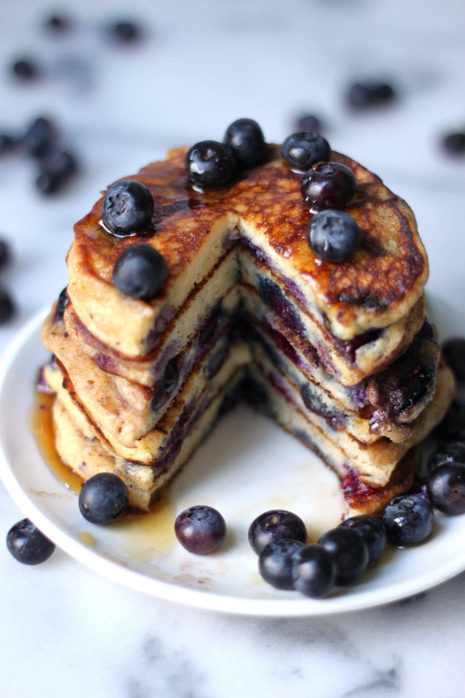

Story
i dont know exactly when i discovered this. possibly during covid
i was always a big fan of pancakes - more precisely chocolate chip ones
which reminds me i havent had those in a long time, i should - soon
ill tell you what blueberries were available more often than chocolate
back in those healthy days im joking i actually dont know if theyre over
but one day. maybe. i forgot about these since there were no bluberries in
where i moved to for uni . i wish there were. could have been the great savior
now im blabbering but anyway i discovered thes back again at home. after a phase of
great failure and self destruction for a lack of a better phrase. i came back to
THE blueberry pancakes. the recipe now is what i eat atleast twoce a week for
breakfast. sometimes lunch too. sometimes dinner too. its easier this way